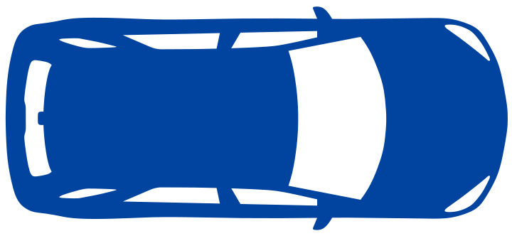

Better Bridgeway Builder
Drivers Stop for Pedestrians
OK. Maybe that wasn't a realistic scenario since the drivers would stop for pedestrians. Let's try that again, but this time the drivers will stop for the slower moving frog.
Hint
 Blue cars stop for pedestrians.